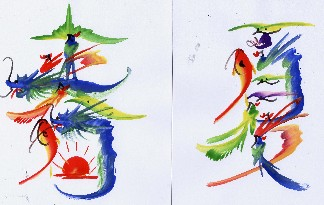
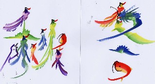
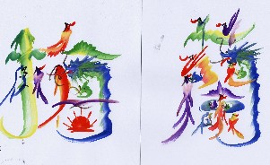
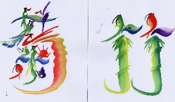
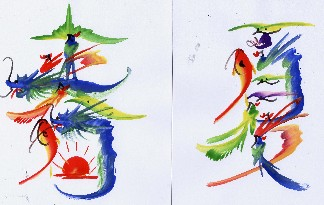
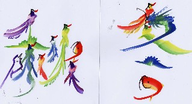
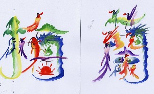
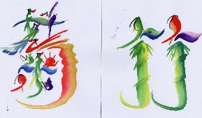

Mahjan talk 雀話。
（144）花牌絵文字 上海空港の近くに、さまざまな文字を魚とか竜とかの絵をあしらって表現する人がいる。やはり自分の名前なんかを、描いてもらう人が多いらしい。 麻雀の花牌と言えば春夏秋冬、梅蘭菊竹。そこで張さんがその４文字を描いて貰った。それがコレ。ふ〜ん、なるほど。しかしこれを花牌にしたら、なんだか目がチラチラしそう....（^-^；    
上海空港の近くに、さまざまな文字を魚とか竜とかの絵をあしらって表現する人がいる。やはり自分の名前なんかを、描いてもらう人が多いらしい。 麻雀の花牌と言えば春夏秋冬、梅蘭菊竹。そこで張さんがその４文字を描いて貰った。それがコレ。ふ〜ん、なるほど。しかしこれを花牌にしたら、なんだか目がチラチラしそう....（^-^；    
以前へ 以降へ 目次へ